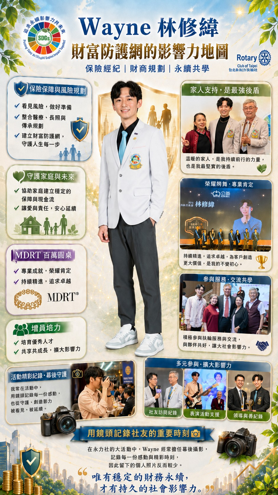

Wayne Lin is an insurance broker whose calling is financial literacy education and family financial planning. In his professional world, insurance is not merely a product, and retirement planning is not merely a calculation of figures. It is a system of sustainable design concerning family security, the dignity of life, and cross-generational succession.
What Wayne cares about is whether wealth can be steadily protected, used, and passed on across time, risk, and the change of generations. He often sees people who earn a good income during their working years yet have never truly confronted the cash-flow gap of retirement, the risks of medical care and long-term care, the erosion of inflation, and the tax and family conflicts that asset succession may bring. These observations have strengthened Wayne's commitment to insurance brokerage and family financial planning, helping every family establish its own "sustainable line of defense" early on.
What is most moving about Wayne is the way he transforms insurance from emotional salesmanship into a financial tool that can be understood, discussed, and designed. He uses a structured KYC process to help clients take stock of their retirement cash flow, asset allocation, coverage gaps, and potential risks. Then, through stress tests addressing the inflation, medical, long-term care, and asset-deterioration pressures of an aging society, he helps clients see the financial scenarios that may arise in the future.
He once helped a business owner nearing retirement carry out cross-generational asset succession planning. That engagement covered setting aside estate tax, structuring insurance policies, and rethinking the questions: how can assets be transferred in an orderly way without adding to the family's burden? How can an individual's wishes be preserved? How can a family's influence continue?
By combining financial logic with insurance tools, Wayne helped the client transform cash assets that might otherwise deteriorate over time into a more stable succession structure with greater legal protection. The client no longer merely worried about retirement life, but began to take command of the pace of their own succession. The family, in turn, reduced the legal disputes, tax pressures, and emotional conflicts they might have faced in the future.
Wayne believes that what is truly worth replicating is the financial culture behind it all. He sees that the problem in many families lies in not discussing risk early enough; in possessing assets yet lacking succession design; in deeply loving family members yet not knowing how to give that love concrete form through a stable arrangement.
For this reason, he places great value on building the concepts of "succession in advance, steady retirement." When a person can understand retirement cash flow, risk transfer, asset preservation, and succession tools early on, they are not only preparing for their own later years, but also reducing future anxiety and uncertainty for their family. Wayne's professional value lies precisely in helping people transform vague unease into concrete plans, and in turning the accumulation of wealth into a support system for family relationships and the dignity of life.
In Wayne's eyes, the Club is an "accelerator of sustainable thinking." Here, members discuss how to transform their respective expertise, resources, and influence into a more lasting contribution to society.
He sees that the Club has the opportunity to address many compound challenges: an aging society, family risk, youth financial literacy, environmental sustainability, social support, and cross-generational shared good. Behind these issues lies one and the same matter: how to give individuals, families, organizations, and society greater resilience and continuity. For this reason, Wayne hopes to promote a "Sustainable Financial Literacy Co-Learning Project" within the Club, so that as members create social impact, they can also secure their own family's financial foundation, freeing them to devote themselves more fully to service, to supporting others, and to creating change.
Beyond co-learning within the club, Wayne also hopes to extend the impact of financial literacy education to the younger generation. He proposes that in the future a "Rotary Youth Financial Literacy Empowerment Program" could be launched, inviting members' children, Rotaract partners, and more young people to learn the basic concepts of retirement defense, financial tools, risk transfer, and asset planning together.
In Wayne's view, the earlier financial literacy education begins, the better young people can make mature judgments when facing career choices, family responsibilities, investment risk, and the changes of life. Raising a person's financial literacy is giving them a gift oriented toward the future, granting them the ability to care for themselves, protect their family, and retain choice and dignity at every stage of life.
"Only with stable financial sustainability can there be lasting social impact."
Wayne protects families through financial intelligence, designs the future through insurance, and responds to the challenges of an aging society through the thinking of succession. What he promotes is a more mature view of wealth: letting wealth be well used; letting succession become the continuation of love and responsibility; letting financial literacy become an essential foundation for the sustainability of families and society.